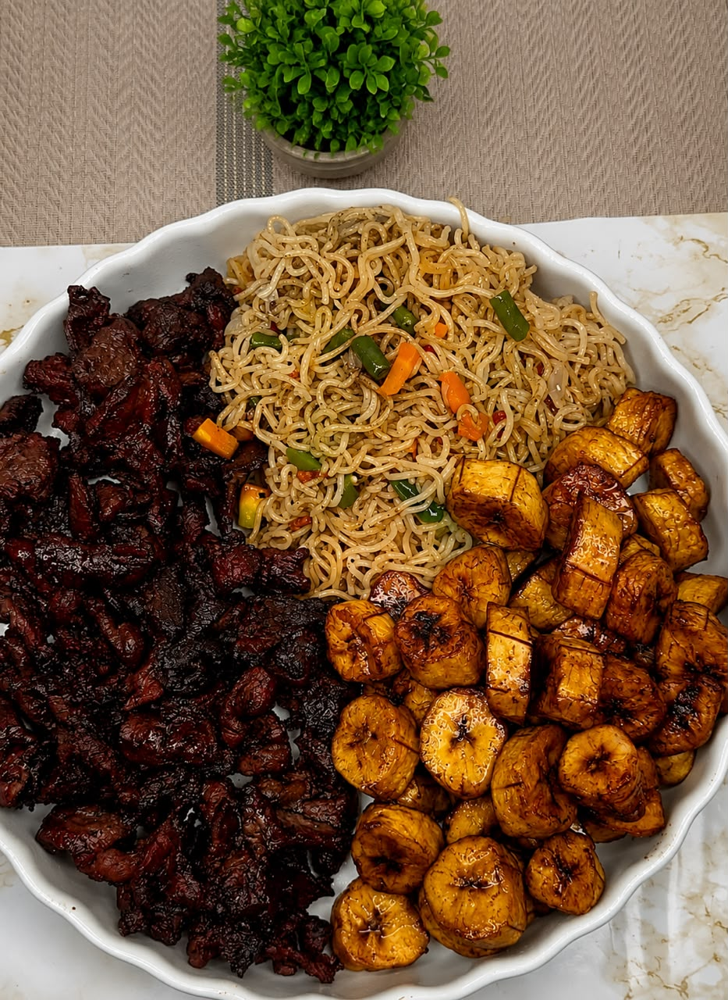

Tradition
TraditionSanga
4 000 FCFAMaïs et feuilles mijotés au lait de palme, pour une spécialité douce et réconfortante.
Nos spécialités
Une sélection de classiques camerounais, avec des prix clairement affichés en FCFA.
TraditionMaïs et feuilles mijotés au lait de palme, pour une spécialité douce et réconfortante.
 Généreux
GénéreuxPoulet mijoté, plantains mûrs et légumes, esprit grande tablée.
 Braisé minute
Braisé minuteMariné aux herbes, braisé à point et servi avec son accompagnement.
 Du terroir
Du terroirSauce gombo aux crabes et à la peau de bœuf, servie avec son tapioca.
 Spécialité
SpécialitéPréparation de haricots fondante, cuite doucement dans sa feuille.
 Recette ancestrale
Recette ancestralePâte de taro et sauce épicée, pour les amateurs de tradition.

GrilléViande grillée aux épices, tendre et délicatement relevée.
Une assiette complète et réconfortante, avec sauce maison.